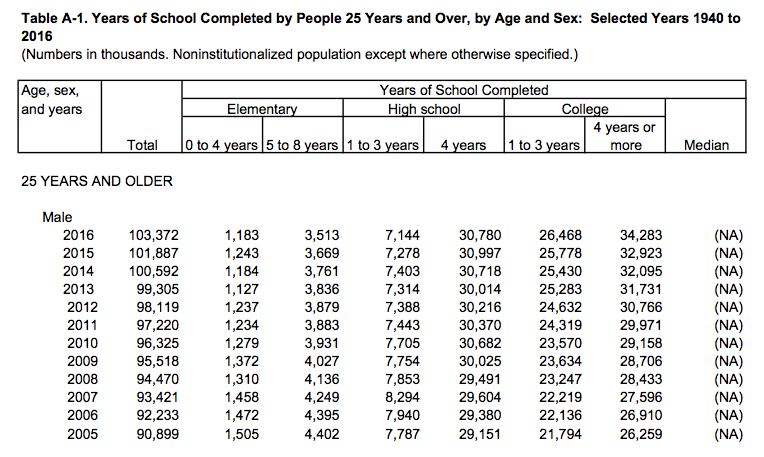
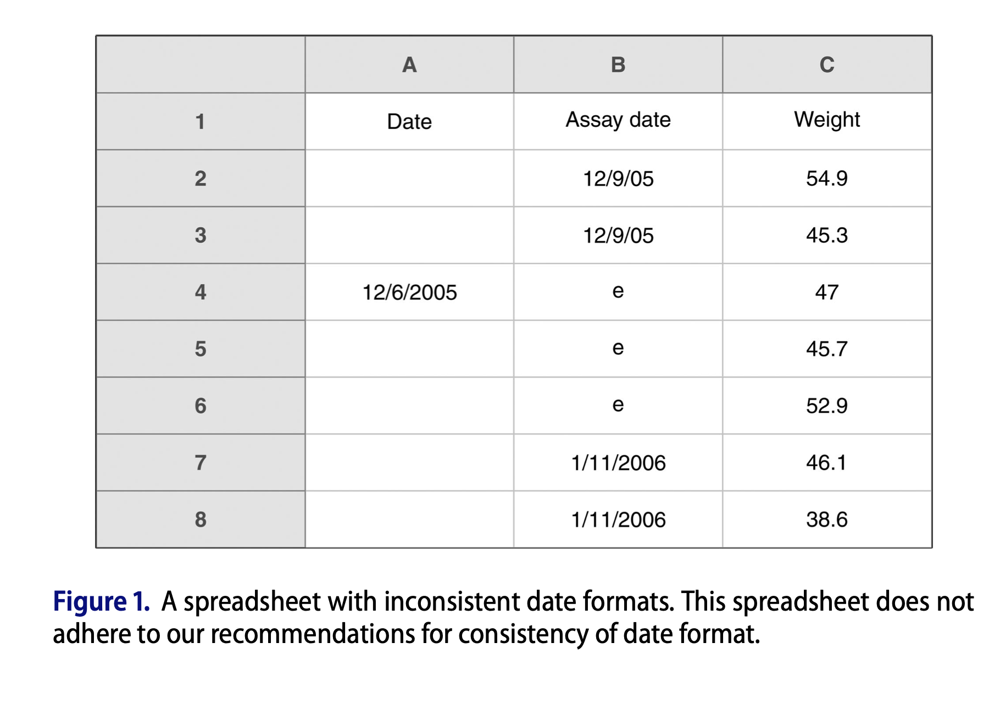
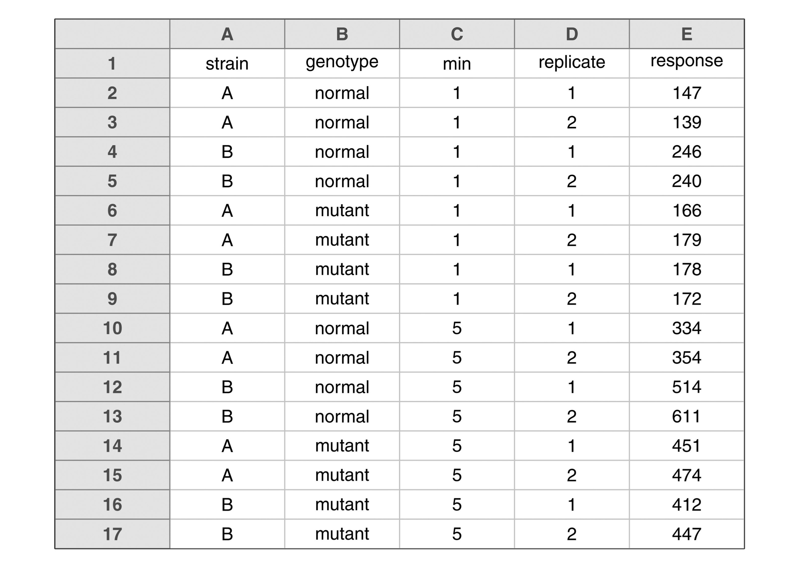
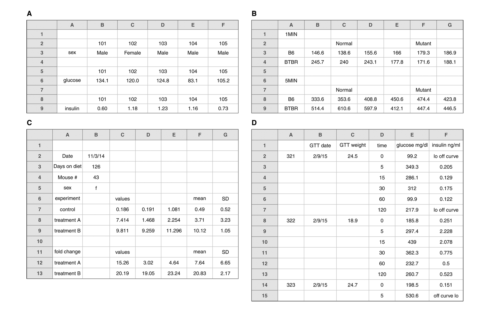
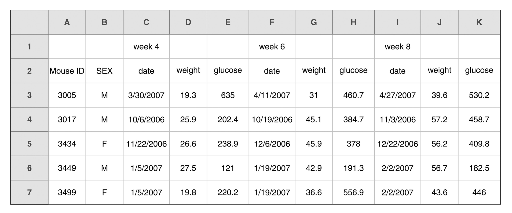
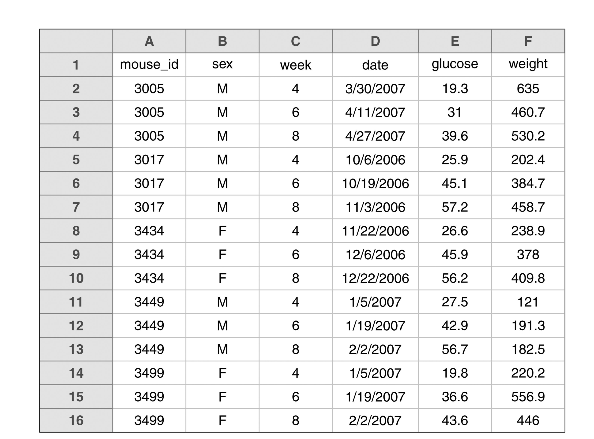

library(here) # manage file paths
library(socviz) # data and some useful functionsTidy data
Data Wrangling, Session 4
Kieran Healy
Code Horizons
October 2, 2024
Tidy data with tidyr
Load the packages, as always
Tidy data
is data in
long format
The Tidyverse wants to be fed tidy data
Get your data into long format
Very, very often, the solution to some data-wrangling problem in Tidyverse-focused workflow is:
Get the data in long format
Then do the recoding thing that you want.
Then transform it back to something wider if needed.
This isn’t an iron rule
As we’ll see later, dplyr is able to do “rowwise” operations if you need them.
It is a
pretty good
rule though
Tidy data
# A tibble: 1,704 × 6
country continent year lifeExp pop gdpPercap
<fct> <fct> <int> <dbl> <int> <dbl>
1 Afghanistan Asia 1952 28.8 8425333 779.
2 Afghanistan Asia 1957 30.3 9240934 821.
3 Afghanistan Asia 1962 32.0 10267083 853.
4 Afghanistan Asia 1967 34.0 11537966 836.
5 Afghanistan Asia 1972 36.1 13079460 740.
6 Afghanistan Asia 1977 38.4 14880372 786.
7 Afghanistan Asia 1982 39.9 12881816 978.
8 Afghanistan Asia 1987 40.8 13867957 852.
9 Afghanistan Asia 1992 41.7 16317921 649.
10 Afghanistan Asia 1997 41.8 22227415 635.
# ℹ 1,694 more rowsTidy data

Tidy data

Tidy data
Each variable has its own column.
Each observation has its own row.
Each value has its own cell.
When data is tidy in this way, the vectorized character of R’s way of doing things works best.
Untidy data: common for good reasons
Untidy data: common for good reasons
Storing data in long form is often inefficient
# A tibble: 11,872 × 5
date state fips measure count
<date> <chr> <chr> <chr> <dbl>
1 2021-03-07 NY 36 positive 1681169
2 2021-03-07 NY 36 probable_cases NA
3 2021-03-07 NY 36 negative NA
4 2021-03-07 NY 36 pending NA
5 2021-03-07 NY 36 hospitalized_currently 4789
6 2021-03-07 NY 36 hospitalized_cumulative NA
7 2021-03-07 NY 36 in_icu_currently 999
8 2021-03-07 NY 36 in_icu_cumulative NA
9 2021-03-07 NY 36 on_ventilator_currently 682
10 2021-03-07 NY 36 on_ventilator_cumulative NA
# ℹ 11,862 more rowsUntidy data: common for good reasons
Storing data in wide form is easier to display in a printed table
library(palmerpenguins)
penguins |>
group_by(species, island, year) |>
summarize(bill = round(mean(bill_length_mm, na.rm = TRUE),2)) |>
knitr::kable()| species | island | year | bill |
|---|---|---|---|
| Adelie | Biscoe | 2007 | 38.32 |
| Adelie | Biscoe | 2008 | 38.70 |
| Adelie | Biscoe | 2009 | 39.69 |
| Adelie | Dream | 2007 | 39.10 |
| Adelie | Dream | 2008 | 38.19 |
| Adelie | Dream | 2009 | 38.15 |
| Adelie | Torgersen | 2007 | 38.80 |
| Adelie | Torgersen | 2008 | 38.77 |
| Adelie | Torgersen | 2009 | 39.31 |
| Chinstrap | Dream | 2007 | 48.72 |
| Chinstrap | Dream | 2008 | 48.70 |
| Chinstrap | Dream | 2009 | 49.05 |
| Gentoo | Biscoe | 2007 | 47.01 |
| Gentoo | Biscoe | 2008 | 46.94 |
| Gentoo | Biscoe | 2009 | 48.50 |
Untidy data: common for good reasons
Storing data in wide form is easier to display in a printed table
penguins |>
group_by(species, island, year) |>
summarize(bill = round(mean(bill_length_mm, na.rm = TRUE), 2)) |>
pivot_wider(names_from = year, values_from = bill) |>
knitr::kable()| species | island | 2007 | 2008 | 2009 |
|---|---|---|---|---|
| Adelie | Biscoe | 38.32 | 38.70 | 39.69 |
| Adelie | Dream | 39.10 | 38.19 | 38.15 |
| Adelie | Torgersen | 38.80 | 38.77 | 39.31 |
| Chinstrap | Dream | 48.72 | 48.70 | 49.05 |
| Gentoo | Biscoe | 47.01 | 46.94 | 48.50 |
It’s also common for less good reasons

It’s also common for less good reasons
- More than one header row
- Mixed data types in some columns
- Color and typography used to encode variables and their values
Fix it before you import it
- Prevention is better than cure!
- Broman KW, Woo KH (2018) “Data organization in spreadsheets.” The American Statistician 78:2–10

Key points from Broman & Woo
Use a consistent date format
ISO 8601
YYYY-MM-DD
- The one true year-month-day format
Key points from Broman & Woo

- No empty cells.
- Use one row of headers only.
Key points from Broman & Woo
Tidied version
Key points from Broman & Woo
Rectangle your data
Key points from Broman & Woo

Use more than one table if needed. We can join them later.
Key points from Broman & Woo
Needs a single header row and a consistent naming scheme.
Key points from Broman & Woo
Tidied version.
The most common tidyr operation
# A tibble: 366 × 11
age sex year total elem4 elem8 hs3 hs4 coll3 coll4 median
<chr> <chr> <int> <int> <int> <int> <dbl> <dbl> <dbl> <dbl> <dbl>
1 25-34 Male 2016 21845 116 468 1427 6386 6015 7432 NA
2 25-34 Male 2015 21427 166 488 1584 6198 5920 7071 NA
3 25-34 Male 2014 21217 151 512 1611 6323 5910 6710 NA
4 25-34 Male 2013 20816 161 582 1747 6058 5749 6519 NA
5 25-34 Male 2012 20464 161 579 1707 6127 5619 6270 NA
6 25-34 Male 2011 20985 190 657 1791 6444 5750 6151 NA
7 25-34 Male 2010 20689 186 641 1866 6458 5587 5951 NA
8 25-34 Male 2009 20440 184 695 1806 6495 5508 5752 NA
9 25-34 Male 2008 20210 172 714 1874 6356 5277 5816 NA
10 25-34 Male 2007 20024 246 757 1930 6361 5137 5593 NA
# ℹ 356 more rows- The “Level of Schooling Attained” measure is spread across the columns, from
elem4tocoll4. - This is fine for a compact table, but for us it should be a single measure, say, “education”.
Wide to long with pivot_longer()
- We’re going to pivot the table. That is, we’ll put the columns
elem4:coll4into a new column, creating a new categorical measure namededucation. The numbers currently under each column will become a new value column corresponding to that level of education.
# A tibble: 2,196 × 7
age sex year total median education value
<chr> <chr> <int> <int> <dbl> <chr> <dbl>
1 25-34 Male 2016 21845 NA elem4 116
2 25-34 Male 2016 21845 NA elem8 468
3 25-34 Male 2016 21845 NA hs3 1427
4 25-34 Male 2016 21845 NA hs4 6386
5 25-34 Male 2016 21845 NA coll3 6015
6 25-34 Male 2016 21845 NA coll4 7432
7 25-34 Male 2015 21427 NA elem4 166
8 25-34 Male 2015 21427 NA elem8 488
9 25-34 Male 2015 21427 NA hs3 1584
10 25-34 Male 2015 21427 NA hs4 6198
# ℹ 2,186 more rowsWide to long with pivot_longer()
- We can name the “value” column to whatever we like. Here it’s a number of people, so let’s call it “
n”.
# A tibble: 2,196 × 7
age sex year total median education n
<chr> <chr> <int> <int> <dbl> <chr> <dbl>
1 25-34 Male 2016 21845 NA elem4 116
2 25-34 Male 2016 21845 NA elem8 468
3 25-34 Male 2016 21845 NA hs3 1427
4 25-34 Male 2016 21845 NA hs4 6386
5 25-34 Male 2016 21845 NA coll3 6015
6 25-34 Male 2016 21845 NA coll4 7432
7 25-34 Male 2015 21427 NA elem4 166
8 25-34 Male 2015 21427 NA elem8 488
9 25-34 Male 2015 21427 NA hs3 1584
10 25-34 Male 2015 21427 NA hs4 6198
# ℹ 2,186 more rowsLet’s recode() it while we’re here
edu |>
pivot_longer(elem4:coll4, names_to = "education", values_to = "n") |>
mutate(education = recode(education,
elem4 = "Elementary 4", elem8 = "Elementary 8",
hs3 = "High School 3", hs4 = "High School 4",
coll3 = "College 3", coll4 = "College 4"))# A tibble: 2,196 × 7
age sex year total median education n
<chr> <chr> <int> <int> <dbl> <chr> <dbl>
1 25-34 Male 2016 21845 NA Elementary 4 116
2 25-34 Male 2016 21845 NA Elementary 8 468
3 25-34 Male 2016 21845 NA High School 3 1427
4 25-34 Male 2016 21845 NA High School 4 6386
5 25-34 Male 2016 21845 NA College 3 6015
6 25-34 Male 2016 21845 NA College 4 7432
7 25-34 Male 2015 21427 NA Elementary 4 166
8 25-34 Male 2015 21427 NA Elementary 8 488
9 25-34 Male 2015 21427 NA High School 3 1584
10 25-34 Male 2015 21427 NA High School 4 6198
# ℹ 2,186 more rows- The argument order of
recode()is inconsistent with other tidyverse functions and it may be superceded in the future.
pivot_longer() implies pivot_wider()
# A tibble: 1,704 × 6
country continent year lifeExp pop gdpPercap
<fct> <fct> <int> <dbl> <int> <dbl>
1 Afghanistan Asia 1952 28.8 8425333 779.
2 Afghanistan Asia 1957 30.3 9240934 821.
3 Afghanistan Asia 1962 32.0 10267083 853.
4 Afghanistan Asia 1967 34.0 11537966 836.
5 Afghanistan Asia 1972 36.1 13079460 740.
6 Afghanistan Asia 1977 38.4 14880372 786.
7 Afghanistan Asia 1982 39.9 12881816 978.
8 Afghanistan Asia 1987 40.8 13867957 852.
9 Afghanistan Asia 1992 41.7 16317921 649.
10 Afghanistan Asia 1997 41.8 22227415 635.
# ℹ 1,694 more rowsBut they’re not symmetric operations!
pivot_longer() implies pivot_wider()
gapminder |>
select(country, continent, year, lifeExp) |>
pivot_wider(names_from = year, values_from = lifeExp) # A tibble: 142 × 14
country continent `1952` `1957` `1962` `1967` `1972` `1977` `1982` `1987`
<fct> <fct> <dbl> <dbl> <dbl> <dbl> <dbl> <dbl> <dbl> <dbl>
1 Afghanistan Asia 28.8 30.3 32.0 34.0 36.1 38.4 39.9 40.8
2 Albania Europe 55.2 59.3 64.8 66.2 67.7 68.9 70.4 72
3 Algeria Africa 43.1 45.7 48.3 51.4 54.5 58.0 61.4 65.8
4 Angola Africa 30.0 32.0 34 36.0 37.9 39.5 39.9 39.9
5 Argentina Americas 62.5 64.4 65.1 65.6 67.1 68.5 69.9 70.8
6 Australia Oceania 69.1 70.3 70.9 71.1 71.9 73.5 74.7 76.3
7 Austria Europe 66.8 67.5 69.5 70.1 70.6 72.2 73.2 74.9
8 Bahrain Asia 50.9 53.8 56.9 59.9 63.3 65.6 69.1 70.8
9 Bangladesh Asia 37.5 39.3 41.2 43.5 45.3 46.9 50.0 52.8
10 Belgium Europe 68 69.2 70.2 70.9 71.4 72.8 73.9 75.4
# ℹ 132 more rows
# ℹ 4 more variables: `1992` <dbl>, `1997` <dbl>, `2002` <dbl>, `2007` <dbl>What about multiple columns?
- This is a pretty common problem. A first thought (“Just don’t mention the other columns”) isn’t it:
# A tibble: 1,704 × 16
country continent pop gdpPercap `1952` `1957` `1962` `1967` `1972` `1977`
<fct> <fct> <int> <dbl> <dbl> <dbl> <dbl> <dbl> <dbl> <dbl>
1 Afghani… Asia 8.43e6 779. 28.8 NA NA NA NA NA
2 Afghani… Asia 9.24e6 821. NA 30.3 NA NA NA NA
3 Afghani… Asia 1.03e7 853. NA NA 32.0 NA NA NA
4 Afghani… Asia 1.15e7 836. NA NA NA 34.0 NA NA
5 Afghani… Asia 1.31e7 740. NA NA NA NA 36.1 NA
6 Afghani… Asia 1.49e7 786. NA NA NA NA NA 38.4
7 Afghani… Asia 1.29e7 978. NA NA NA NA NA NA
8 Afghani… Asia 1.39e7 852. NA NA NA NA NA NA
9 Afghani… Asia 1.63e7 649. NA NA NA NA NA NA
10 Afghani… Asia 2.22e7 635. NA NA NA NA NA NA
# ℹ 1,694 more rows
# ℹ 6 more variables: `1982` <dbl>, `1987` <dbl>, `1992` <dbl>, `1997` <dbl>,
# `2002` <dbl>, `2007` <dbl>popandgdpPercapare still long, and now our table is really sparse.
What about multiple columns?
We need to specify that we want values from more than one column.
gapminder |>
select(country, continent, year, lifeExp, gdpPercap) |>
pivot_wider(names_from = year, values_from = c(lifeExp, gdpPercap)) # A tibble: 142 × 26
country continent lifeExp_1952 lifeExp_1957 lifeExp_1962 lifeExp_1967
<fct> <fct> <dbl> <dbl> <dbl> <dbl>
1 Afghanistan Asia 28.8 30.3 32.0 34.0
2 Albania Europe 55.2 59.3 64.8 66.2
3 Algeria Africa 43.1 45.7 48.3 51.4
4 Angola Africa 30.0 32.0 34 36.0
5 Argentina Americas 62.5 64.4 65.1 65.6
6 Australia Oceania 69.1 70.3 70.9 71.1
7 Austria Europe 66.8 67.5 69.5 70.1
8 Bahrain Asia 50.9 53.8 56.9 59.9
9 Bangladesh Asia 37.5 39.3 41.2 43.5
10 Belgium Europe 68 69.2 70.2 70.9
# ℹ 132 more rows
# ℹ 20 more variables: lifeExp_1972 <dbl>, lifeExp_1977 <dbl>,
# lifeExp_1982 <dbl>, lifeExp_1987 <dbl>, lifeExp_1992 <dbl>,
# lifeExp_1997 <dbl>, lifeExp_2002 <dbl>, lifeExp_2007 <dbl>,
# gdpPercap_1952 <dbl>, gdpPercap_1957 <dbl>, gdpPercap_1962 <dbl>,
# gdpPercap_1967 <dbl>, gdpPercap_1972 <dbl>, gdpPercap_1977 <dbl>,
# gdpPercap_1982 <dbl>, gdpPercap_1987 <dbl>, gdpPercap_1992 <dbl>, …- This will give us a very wide table, but it’s what we wanted.
Pivot wider while summarizing
# A tibble: 1,000 × 5
stratum sex race educ income
<dbl> <chr> <chr> <chr> <dbl>
1 6 F W HS 83.7
2 5 F W BA 128.
3 3 F B HS 66.3
4 3 F W HS 111.
5 6 M W BA 116.
6 7 M B HS 159.
7 8 M W BA 131.
8 3 M W BA 94.4
9 7 F B HS 146.
10 2 F W BA 88.8
# ℹ 990 more rowsPivot wider while summarizing
Pivot wider while summarizing
# A tibble: 1,000 × 5
stratum sex race educ income
<dbl> <chr> <chr> <chr> <dbl>
1 6 F W HS 83.7
2 5 F W BA 128.
3 3 F B HS 66.3
4 3 F W HS 111.
5 6 M W BA 116.
6 7 M B HS 159.
7 8 M W BA 131.
8 3 M W BA 94.4
9 7 F B HS 146.
10 2 F W BA 88.8
# ℹ 990 more rowsPivot wider while summarizing
# A tibble: 1,000 × 5
# Groups: sex, race, stratum, educ [64]
stratum sex race educ income
<dbl> <chr> <chr> <chr> <dbl>
1 6 F W HS 83.7
2 5 F W BA 128.
3 3 F B HS 66.3
4 3 F W HS 111.
5 6 M W BA 116.
6 7 M B HS 159.
7 8 M W BA 131.
8 3 M W BA 94.4
9 7 F B HS 146.
10 2 F W BA 88.8
# ℹ 990 more rowsPivot wider while summarizing
# A tibble: 64 × 6
# Groups: sex, race, stratum [32]
sex race stratum educ mean_inc n
<chr> <chr> <dbl> <chr> <dbl> <int>
1 F B 1 BA 93.8 19
2 F B 1 HS 99.3 6
3 F B 2 BA 89.7 11
4 F B 2 HS 93.0 16
5 F B 3 BA 112. 13
6 F B 3 HS 95.0 16
7 F B 4 BA 108. 14
8 F B 4 HS 96.1 15
9 F B 5 BA 91.0 11
10 F B 5 HS 92.6 15
# ℹ 54 more rowsPivot wider while summarizing
# A tibble: 32 × 7
# Groups: sex, race, stratum [32]
sex race stratum mean_inc_BA mean_inc_HS n_BA n_HS
<chr> <chr> <dbl> <dbl> <dbl> <int> <int>
1 F B 1 93.8 99.3 19 6
2 F B 2 89.7 93.0 11 16
3 F B 3 112. 95.0 13 16
4 F B 4 108. 96.1 14 15
5 F B 5 91.0 92.6 11 15
6 F B 6 93.0 116. 15 15
7 F B 7 102. 121. 13 13
8 F B 8 105. 88.3 14 8
9 F W 1 92.6 110. 19 13
10 F W 2 98.5 101. 15 19
# ℹ 22 more rowsPivot wider while summarizing
# A tibble: 32 × 7
sex race stratum mean_inc_BA mean_inc_HS n_BA n_HS
<chr> <chr> <dbl> <dbl> <dbl> <int> <int>
1 F B 1 93.8 99.3 19 6
2 F B 2 89.7 93.0 11 16
3 F B 3 112. 95.0 13 16
4 F B 4 108. 96.1 14 15
5 F B 5 91.0 92.6 11 15
6 F B 6 93.0 116. 15 15
7 F B 7 102. 121. 13 13
8 F B 8 105. 88.3 14 8
9 F W 1 92.6 110. 19 13
10 F W 2 98.5 101. 15 19
# ℹ 22 more rowsHere we end up with sex-by-race-by-stratum in the rows, and the income-by-education means, and income-by-education Ns, in their own columns.
Separate and Unite
separate() and unite() columns
## tribble() lets you make tibbles by hand
df <- tribble(
~name, ~occupation,
"Nero.Wolfe", "Private Detective",
"Archie.Goodwin", "Personal Assistant",
"Fritz.Brenner", "Cook and Butler",
"Theodore.Horstmann", "Orchid Expert"
)
df# A tibble: 4 × 2
name occupation
<chr> <chr>
1 Nero.Wolfe Private Detective
2 Archie.Goodwin Personal Assistant
3 Fritz.Brenner Cook and Butler
4 Theodore.Horstmann Orchid Expert separate() and unite() columns
## tribble() lets you make tibbles by hand
df <- tribble(
~name, ~occupation,
"Nero.Wolfe", "Private Detective",
"Archie.Goodwin", "Personal Assistant",
"Fritz.Brenner", "Cook and Butler",
"Theodore.Horstmann", "Orchid Expert"
)
df# A tibble: 4 × 2
name occupation
<chr> <chr>
1 Nero.Wolfe Private Detective
2 Archie.Goodwin Personal Assistant
3 Fritz.Brenner Cook and Butler
4 Theodore.Horstmann Orchid Expert Separate and unite
Separate and unite
Separate and unite
Separate and unite
# A tibble: 4 × 3
both_together full_name occupation
<chr> <chr> <chr>
1 Nero Wolfe, Private Detective Nero Wolfe Private Detective
2 Archie Goodwin, Personal Assistant Archie Goodwin Personal Assistant
3 Fritz Brenner, Cook and Butler Fritz Brenner Cook and Butler
4 Theodore Horstmann, Orchid Expert Theodore Horstmann Orchid Expert Separate and unite
# A tibble: 4 × 3
both_together full_name occupation
<chr> <chr> <chr>
1 Nero Wolfe, Private Detective Nero Wolfe Private Detective
2 Archie Goodwin, Personal Assistant Archie Goodwin Personal Assistant
3 Fritz Brenner, Cook and Butler Fritz Brenner Cook and Butler
4 Theodore Horstmann, Orchid Expert Theodore Horstmann Orchid Expert Separate and unite
Separate and unite
Separate and unite
Separate and unite
# A tibble: 4 × 3
first last occupation
<chr> <chr> <chr>
1 Nero Wolfe Private Detective
2 Archie Goodwin Personal Assistant
3 Fritz Brenner Cook and Butler
4 Theodore Horstmann Orchid Expert Separate and unite
# A tibble: 4 × 3
first last occupation
<chr> <chr> <chr>
1 Nero Wolfe Private Detective
2 Archie Goodwin Personal Assistant
3 Fritz Brenner Cook and Butler
4 Theodore Horstmann Orchid Expert The underscore, _, is the default uniting character.
Separate and unite
# A tibble: 2,867 × 32
year id ballot age childs sibs degree race sex region income16
<dbl> <dbl> <labelled> <dbl> <dbl> <labe> <fct> <fct> <fct> <fct> <fct>
1 2016 1 1 47 3 2 Bache… White Male New E… $170000…
2 2016 2 2 61 0 3 High … White Male New E… $50000 …
3 2016 3 3 72 2 3 Bache… White Male New E… $75000 …
4 2016 4 1 43 4 3 High … White Fema… New E… $170000…
5 2016 5 3 55 2 2 Gradu… White Fema… New E… $170000…
6 2016 6 2 53 2 2 Junio… White Fema… New E… $60000 …
7 2016 7 1 50 2 2 High … White Male New E… $170000…
8 2016 8 3 23 3 6 High … Other Fema… Middl… $30000 …
9 2016 9 1 45 3 5 High … Black Male Middl… $60000 …
10 2016 10 3 71 4 1 Junio… White Male Middl… $60000 …
# ℹ 2,857 more rows
# ℹ 21 more variables: relig <fct>, marital <fct>, padeg <fct>, madeg <fct>,
# partyid <fct>, polviews <fct>, happy <fct>, partners <fct>, grass <fct>,
# zodiac <fct>, pres12 <labelled>, wtssall <dbl>, income_rc <fct>,
# agegrp <fct>, ageq <fct>, siblings <fct>, kids <fct>, religion <fct>,
# bigregion <fct>, partners_rc <fct>, obama <dbl>Separate and unite
Separate and unite
# A tibble: 2,867 × 3
race degree racedeg
<fct> <fct> <fct>
1 White Bachelor White.Bachelor
2 White High School White.High School
3 White Bachelor White.Bachelor
4 White High School White.High School
5 White Graduate White.Graduate
6 White Junior College White.Junior College
7 White High School White.High School
8 Other High School Other.High School
9 Black High School Black.High School
10 White Junior College White.Junior College
# ℹ 2,857 more rowsSeparate and unite
# A tibble: 2,867 × 3
# Groups: racedeg [16]
race degree racedeg
<fct> <fct> <fct>
1 White Bachelor White.Bachelor
2 White High School White.High School
3 White Bachelor White.Bachelor
4 White High School White.High School
5 White Graduate White.Graduate
6 White Junior College White.Junior College
7 White High School White.High School
8 Other High School Other.High School
9 Black High School Black.High School
10 White Junior College White.Junior College
# ℹ 2,857 more rowsSeparate and unite
# A tibble: 16 × 2
racedeg n
<fct> <int>
1 White.Lt High School 197
2 Black.Lt High School 60
3 Other.Lt High School 71
4 White.High School 1057
5 Black.High School 292
6 Other.High School 112
7 White.Junior College 166
8 Black.Junior College 33
9 Other.Junior College 17
10 White.Bachelor 426
11 Black.Bachelor 71
12 Other.Bachelor 39
13 White.Graduate 250
14 Black.Graduate 31
15 Other.Graduate 37
16 <NA> 8Separate and unite
# A tibble: 16 × 3
race degree n
<chr> <chr> <int>
1 White Lt High School 197
2 Black Lt High School 60
3 Other Lt High School 71
4 White High School 1057
5 Black High School 292
6 Other High School 112
7 White Junior College 166
8 Black Junior College 33
9 Other Junior College 17
10 White Bachelor 426
11 Black Bachelor 71
12 Other Bachelor 39
13 White Graduate 250
14 Black Graduate 31
15 Other Graduate 37
16 <NA> <NA> 8This one is a bit trickier, and our first glimpse of a regular expression.
We have to tell separate() to split on the period, not the space.
More advanced pivots
Example: tidy selectors
# A tibble: 317 × 79
artist track date.entered wk1 wk2 wk3 wk4 wk5 wk6 wk7 wk8
<chr> <chr> <date> <dbl> <dbl> <dbl> <dbl> <dbl> <dbl> <dbl> <dbl>
1 2 Pac Baby… 2000-02-26 87 82 72 77 87 94 99 NA
2 2Ge+her The … 2000-09-02 91 87 92 NA NA NA NA NA
3 3 Doors D… Kryp… 2000-04-08 81 70 68 67 66 57 54 53
4 3 Doors D… Loser 2000-10-21 76 76 72 69 67 65 55 59
5 504 Boyz Wobb… 2000-04-15 57 34 25 17 17 31 36 49
6 98^0 Give… 2000-08-19 51 39 34 26 26 19 2 2
7 A*Teens Danc… 2000-07-08 97 97 96 95 100 NA NA NA
8 Aaliyah I Do… 2000-01-29 84 62 51 41 38 35 35 38
9 Aaliyah Try … 2000-03-18 59 53 38 28 21 18 16 14
10 Adams, Yo… Open… 2000-08-26 76 76 74 69 68 67 61 58
# ℹ 307 more rows
# ℹ 68 more variables: wk9 <dbl>, wk10 <dbl>, wk11 <dbl>, wk12 <dbl>,
# wk13 <dbl>, wk14 <dbl>, wk15 <dbl>, wk16 <dbl>, wk17 <dbl>, wk18 <dbl>,
# wk19 <dbl>, wk20 <dbl>, wk21 <dbl>, wk22 <dbl>, wk23 <dbl>, wk24 <dbl>,
# wk25 <dbl>, wk26 <dbl>, wk27 <dbl>, wk28 <dbl>, wk29 <dbl>, wk30 <dbl>,
# wk31 <dbl>, wk32 <dbl>, wk33 <dbl>, wk34 <dbl>, wk35 <dbl>, wk36 <dbl>,
# wk37 <dbl>, wk38 <dbl>, wk39 <dbl>, wk40 <dbl>, wk41 <dbl>, wk42 <dbl>, …Example: tidy selectors
billboard |>
pivot_longer(
cols = starts_with("wk"),
names_to = "week",
values_to = "rank",
values_drop_na = TRUE
)# A tibble: 5,307 × 5
artist track date.entered week rank
<chr> <chr> <date> <chr> <dbl>
1 2 Pac Baby Don't Cry (Keep... 2000-02-26 wk1 87
2 2 Pac Baby Don't Cry (Keep... 2000-02-26 wk2 82
3 2 Pac Baby Don't Cry (Keep... 2000-02-26 wk3 72
4 2 Pac Baby Don't Cry (Keep... 2000-02-26 wk4 77
5 2 Pac Baby Don't Cry (Keep... 2000-02-26 wk5 87
6 2 Pac Baby Don't Cry (Keep... 2000-02-26 wk6 94
7 2 Pac Baby Don't Cry (Keep... 2000-02-26 wk7 99
8 2Ge+her The Hardest Part Of ... 2000-09-02 wk1 91
9 2Ge+her The Hardest Part Of ... 2000-09-02 wk2 87
10 2Ge+her The Hardest Part Of ... 2000-09-02 wk3 92
# ℹ 5,297 more rowsExample: parse fns
billboard |>
pivot_longer(
cols = starts_with("wk"),
names_to = "week",
names_transform = readr::parse_number,
values_to = "rank",
values_drop_na = TRUE,
)# A tibble: 5,307 × 5
artist track date.entered week rank
<chr> <chr> <date> <dbl> <dbl>
1 2 Pac Baby Don't Cry (Keep... 2000-02-26 1 87
2 2 Pac Baby Don't Cry (Keep... 2000-02-26 2 82
3 2 Pac Baby Don't Cry (Keep... 2000-02-26 3 72
4 2 Pac Baby Don't Cry (Keep... 2000-02-26 4 77
5 2 Pac Baby Don't Cry (Keep... 2000-02-26 5 87
6 2 Pac Baby Don't Cry (Keep... 2000-02-26 6 94
7 2 Pac Baby Don't Cry (Keep... 2000-02-26 7 99
8 2Ge+her The Hardest Part Of ... 2000-09-02 1 91
9 2Ge+her The Hardest Part Of ... 2000-09-02 2 87
10 2Ge+her The Hardest Part Of ... 2000-09-02 3 92
# ℹ 5,297 more rowsExample: many vars in cols
# A tibble: 7,240 × 60
country iso2 iso3 year new_sp_m014 new_sp_m1524 new_sp_m2534 new_sp_m3544
<chr> <chr> <chr> <dbl> <dbl> <dbl> <dbl> <dbl>
1 Afghani… AF AFG 1980 NA NA NA NA
2 Afghani… AF AFG 1981 NA NA NA NA
3 Afghani… AF AFG 1982 NA NA NA NA
4 Afghani… AF AFG 1983 NA NA NA NA
5 Afghani… AF AFG 1984 NA NA NA NA
6 Afghani… AF AFG 1985 NA NA NA NA
7 Afghani… AF AFG 1986 NA NA NA NA
8 Afghani… AF AFG 1987 NA NA NA NA
9 Afghani… AF AFG 1988 NA NA NA NA
10 Afghani… AF AFG 1989 NA NA NA NA
# ℹ 7,230 more rows
# ℹ 52 more variables: new_sp_m4554 <dbl>, new_sp_m5564 <dbl>,
# new_sp_m65 <dbl>, new_sp_f014 <dbl>, new_sp_f1524 <dbl>,
# new_sp_f2534 <dbl>, new_sp_f3544 <dbl>, new_sp_f4554 <dbl>,
# new_sp_f5564 <dbl>, new_sp_f65 <dbl>, new_sn_m014 <dbl>,
# new_sn_m1524 <dbl>, new_sn_m2534 <dbl>, new_sn_m3544 <dbl>,
# new_sn_m4554 <dbl>, new_sn_m5564 <dbl>, new_sn_m65 <dbl>, …Example: many vars in cols
who |>
pivot_longer(
cols = new_sp_m014:newrel_f65,
names_to = c("diagnosis", "gender", "age"),
names_pattern = "new_?(.*)_(.)(.*)",
values_to = "count"
)# A tibble: 405,440 × 8
country iso2 iso3 year diagnosis gender age count
<chr> <chr> <chr> <dbl> <chr> <chr> <chr> <dbl>
1 Afghanistan AF AFG 1980 sp m 014 NA
2 Afghanistan AF AFG 1980 sp m 1524 NA
3 Afghanistan AF AFG 1980 sp m 2534 NA
4 Afghanistan AF AFG 1980 sp m 3544 NA
5 Afghanistan AF AFG 1980 sp m 4554 NA
6 Afghanistan AF AFG 1980 sp m 5564 NA
7 Afghanistan AF AFG 1980 sp m 65 NA
8 Afghanistan AF AFG 1980 sp f 014 NA
9 Afghanistan AF AFG 1980 sp f 1524 NA
10 Afghanistan AF AFG 1980 sp f 2534 NA
# ℹ 405,430 more rowsExample: many vars in cols
who |>
pivot_longer(
cols = new_sp_m014:newrel_f65,
names_to = c("diagnosis", "gender", "age"),
names_pattern = "new_?(.*)_(.)(.*)",
names_transform = list(
gender = ~ readr::parse_factor(.x, levels = c("f", "m")),
age = ~ readr::parse_factor(
.x,
levels = c("014", "1524", "2534", "3544", "4554", "5564", "65"),
ordered = TRUE
)
),
values_to = "count"
)# A tibble: 405,440 × 8
country iso2 iso3 year diagnosis gender age count
<chr> <chr> <chr> <dbl> <chr> <fct> <ord> <dbl>
1 Afghanistan AF AFG 1980 sp m 014 NA
2 Afghanistan AF AFG 1980 sp m 1524 NA
3 Afghanistan AF AFG 1980 sp m 2534 NA
4 Afghanistan AF AFG 1980 sp m 3544 NA
5 Afghanistan AF AFG 1980 sp m 4554 NA
6 Afghanistan AF AFG 1980 sp m 5564 NA
7 Afghanistan AF AFG 1980 sp m 65 NA
8 Afghanistan AF AFG 1980 sp f 014 NA
9 Afghanistan AF AFG 1980 sp f 1524 NA
10 Afghanistan AF AFG 1980 sp f 2534 NA
# ℹ 405,430 more rowsExample: long to wide
## Get the data and normalize the column names
df <- read_csv("http://kjhealy.co/MVOtestdata.csv") |>
janitor::clean_names()
## Starting point
df# A tibble: 26 × 11
id date wheelies right_shoe_color right_shoe_size left_shoe_color
<dbl> <chr> <chr> <chr> <dbl> <chr>
1 8675309 2/1/2009 no <NA> NA <NA>
2 8675309 2/4/2014 no <NA> NA <NA>
3 8675309 2/15/2006 no none NA none
4 8675309 3/1/2009 no none NA <NA>
5 8675309 4/20/2013 no white NA <NA>
6 8675309 4/30/2010 <NA> white 3 white
7 8675309 5/5/2012 no <NA> NA <NA>
8 8675309 7/31/2009 no <NA> NA none
9 8675309 10/22/2008 no <NA> NA none
10 9021033 1/11/2005 no white 5 orange
# ℹ 16 more rows
# ℹ 5 more variables: left_shoe_size <dbl>, right_glove_color <chr>,
# right_glove_size <dbl>, left_glove_color <chr>, left_glove_size <dbl>Example: long to wide
Example: there & back
More fully lengthen by making side, item, color, and size into variables (ie columns)
df_lon <- df |>
pivot_longer(right_shoe_color:left_glove_size,
names_to = c("side", "item", ".value"),
names_pattern = "(.*)_(.*)_(.*)")
df_lon# A tibble: 104 × 7
id date wheelies side item color size
<dbl> <chr> <chr> <chr> <chr> <chr> <dbl>
1 8675309 2/1/2009 no right shoe <NA> NA
2 8675309 2/1/2009 no left shoe <NA> NA
3 8675309 2/1/2009 no right glove <NA> 3
4 8675309 2/1/2009 no left glove <NA> 1
5 8675309 2/4/2014 no right shoe <NA> NA
6 8675309 2/4/2014 no left shoe <NA> 1
7 8675309 2/4/2014 no right glove <NA> NA
8 8675309 2/4/2014 no left glove <NA> NA
9 8675309 2/15/2006 no right shoe none NA
10 8675309 2/15/2006 no left shoe none NA
# ℹ 94 more rowsExample: there & back
Example: there & back
# A tibble: 3 × 625
id date_1 date_2 date_3 date_4 date_5 date_6
<chr> <date> <date> <date> <date> <date> <date>
1 8675309 2009-02-01 2009-02-01 2009-02-01 2009-02-01 2014-02-04 2014-02-04
2 9021033 NA NA NA NA NA NA
3 1234567 NA NA NA NA NA NA
# ℹ 618 more variables: date_7 <date>, date_8 <date>, date_9 <date>,
# date_10 <date>, date_11 <date>, date_12 <date>, date_13 <date>,
# date_14 <date>, date_15 <date>, date_16 <date>, date_17 <date>,
# date_18 <date>, date_19 <date>, date_20 <date>, date_21 <date>,
# date_22 <date>, date_23 <date>, date_24 <date>, date_25 <date>,
# date_26 <date>, date_27 <date>, date_28 <date>, date_29 <date>,
# date_30 <date>, date_31 <date>, date_32 <date>, date_33 <date>, … [1] "id" "date_1" "date_2" "date_3" "date_4" "date_5" "date_6"
[8] "date_7" "date_8" "date_9" "date_10" "date_11" "date_12" "date_13"
[15] "date_14" "date_15" "date_16" "date_17" "date_18" "date_19" "date_20"
[22] "date_21" "date_22" "date_23" "date_24" "date_25" "date_26" "date_27"
[29] "date_28" "date_29" "date_30" "date_31" "date_32" "date_33" "date_34"
[36] "date_35" "date_36" "date_37" "date_38" "date_39" "date_40" "date_41"
[43] "date_42" "date_43" "date_44" "date_45" "date_46" "date_47" "date_48"
[50] "date_49" "date_50" "date_51" "date_52" "date_53" "date_54" "date_55"
[57] "date_56" "date_57" "date_58" "date_59" "date_60" "date_61" "date_62"
[64] "date_63" "date_64" "date_65" "date_66" "date_67" "date_68" "date_69"
[71] "date_70" "date_71" "date_72" "date_73" "date_74" "date_75" "date_76"
[78] "date_77" "date_78" "date_79" "date_80" "date_81" "date_82" "date_83"
[85] "date_84" "date_85" "date_86" "date_87" "date_88" "date_89" "date_90"
[92] "date_91" "date_92" "date_93" "date_94" "date_95" "date_96" "date_97"
[99] "date_98" "date_99"
[ reached getOption("max.print") -- omitted 525 entries ]Nested Data
Example 1: from the tidyr Vignette
## Examples of recursive lists and nested/split data frames
# install.packages("repurrsive")
library(repurrrsive)
chars <- tibble(char = got_chars)
chars# A tibble: 30 × 1
char
<list>
1 <named list [18]>
2 <named list [18]>
3 <named list [18]>
4 <named list [18]>
5 <named list [18]>
6 <named list [18]>
7 <named list [18]>
8 <named list [18]>
9 <named list [18]>
10 <named list [18]>
# ℹ 20 more rowsExample 1: from the tidyr Vignette
# A tibble: 30 × 18
url id name gender culture born died alive titles aliases father
<chr> <int> <chr> <chr> <chr> <chr> <chr> <lgl> <list> <list> <chr>
1 https://w… 1022 Theo… Male "Ironb… "In … "" TRUE <chr> <chr> ""
2 https://w… 1052 Tyri… Male "" "In … "" TRUE <chr> <chr> ""
3 https://w… 1074 Vict… Male "Ironb… "In … "" TRUE <chr> <chr> ""
4 https://w… 1109 Will Male "" "" "In … FALSE <chr> <chr> ""
5 https://w… 1166 Areo… Male "Norvo… "In … "" TRUE <chr> <chr> ""
6 https://w… 1267 Chett Male "" "At … "In … FALSE <chr> <chr> ""
7 https://w… 1295 Cres… Male "" "In … "In … FALSE <chr> <chr> ""
8 https://w… 130 Aria… Female "Dorni… "In … "" TRUE <chr> <chr> ""
9 https://w… 1303 Daen… Female "Valyr… "In … "" TRUE <chr> <chr> ""
10 https://w… 1319 Davo… Male "Weste… "In … "" TRUE <chr> <chr> ""
# ℹ 20 more rows
# ℹ 7 more variables: mother <chr>, spouse <chr>, allegiances <list>,
# books <list>, povBooks <list>, tvSeries <list>, playedBy <list>Example 1: from the tidyr Vignette
# A tibble: 30 × 7
titles aliases allegiances books povBooks tvSeries playedBy
<list> <list> <list> <list> <list> <list> <list>
1 <chr [2]> <chr [4]> <chr [1]> <chr [3]> <chr [2]> <chr [6]> <chr [1]>
2 <chr [2]> <chr [11]> <chr [1]> <chr [2]> <chr [4]> <chr [6]> <chr [1]>
3 <chr [2]> <chr [1]> <chr [1]> <chr [3]> <chr [2]> <chr [1]> <chr [1]>
4 <chr [1]> <chr [1]> <NULL> <chr [1]> <chr [1]> <chr [1]> <chr [1]>
5 <chr [1]> <chr [1]> <chr [1]> <chr [3]> <chr [2]> <chr [2]> <chr [1]>
6 <chr [1]> <chr [1]> <NULL> <chr [2]> <chr [1]> <chr [1]> <chr [1]>
7 <chr [1]> <chr [1]> <NULL> <chr [2]> <chr [1]> <chr [1]> <chr [1]>
8 <chr [1]> <chr [1]> <chr [1]> <chr [4]> <chr [1]> <chr [1]> <chr [1]>
9 <chr [5]> <chr [11]> <chr [1]> <chr [1]> <chr [4]> <chr [6]> <chr [1]>
10 <chr [4]> <chr [5]> <chr [2]> <chr [1]> <chr [3]> <chr [5]> <chr [1]>
# ℹ 20 more rowsExample 1: from the tidyr Vignette
A row for every book and TV series that the character appears in:
# A tibble: 30 × 18
url id name gender culture born died alive titles aliases father
<chr> <int> <chr> <chr> <chr> <chr> <chr> <lgl> <list> <list> <chr>
1 https://w… 1022 Theo… Male "Ironb… "In … "" TRUE <chr> <chr> ""
2 https://w… 1052 Tyri… Male "" "In … "" TRUE <chr> <chr> ""
3 https://w… 1074 Vict… Male "Ironb… "In … "" TRUE <chr> <chr> ""
4 https://w… 1109 Will Male "" "" "In … FALSE <chr> <chr> ""
5 https://w… 1166 Areo… Male "Norvo… "In … "" TRUE <chr> <chr> ""
6 https://w… 1267 Chett Male "" "At … "In … FALSE <chr> <chr> ""
7 https://w… 1295 Cres… Male "" "In … "In … FALSE <chr> <chr> ""
8 https://w… 130 Aria… Female "Dorni… "In … "" TRUE <chr> <chr> ""
9 https://w… 1303 Daen… Female "Valyr… "In … "" TRUE <chr> <chr> ""
10 https://w… 1319 Davo… Male "Weste… "In … "" TRUE <chr> <chr> ""
# ℹ 20 more rows
# ℹ 7 more variables: mother <chr>, spouse <chr>, allegiances <list>,
# books <list>, povBooks <list>, tvSeries <list>, playedBy <list>Example 1: Vignette
# A tibble: 30 × 18
url id name gender culture born died alive titles aliases father
<chr> <int> <chr> <chr> <chr> <chr> <chr> <lgl> <list> <list> <chr>
1 https://w… 1022 Theo… Male "Ironb… "In … "" TRUE <chr> <chr> ""
2 https://w… 1052 Tyri… Male "" "In … "" TRUE <chr> <chr> ""
3 https://w… 1074 Vict… Male "Ironb… "In … "" TRUE <chr> <chr> ""
4 https://w… 1109 Will Male "" "" "In … FALSE <chr> <chr> ""
5 https://w… 1166 Areo… Male "Norvo… "In … "" TRUE <chr> <chr> ""
6 https://w… 1267 Chett Male "" "At … "In … FALSE <chr> <chr> ""
7 https://w… 1295 Cres… Male "" "In … "In … FALSE <chr> <chr> ""
8 https://w… 130 Aria… Female "Dorni… "In … "" TRUE <chr> <chr> ""
9 https://w… 1303 Daen… Female "Valyr… "In … "" TRUE <chr> <chr> ""
10 https://w… 1319 Davo… Male "Weste… "In … "" TRUE <chr> <chr> ""
# ℹ 20 more rows
# ℹ 7 more variables: mother <chr>, spouse <chr>, allegiances <list>,
# books <list>, povBooks <list>, tvSeries <list>, playedBy <list>Example 1: Vignette
# A tibble: 30 × 3
name books tvSeries
<chr> <list> <list>
1 Theon Greyjoy <chr [3]> <chr [6]>
2 Tyrion Lannister <chr [2]> <chr [6]>
3 Victarion Greyjoy <chr [3]> <chr [1]>
4 Will <chr [1]> <chr [1]>
5 Areo Hotah <chr [3]> <chr [2]>
6 Chett <chr [2]> <chr [1]>
7 Cressen <chr [2]> <chr [1]>
8 Arianne Martell <chr [4]> <chr [1]>
9 Daenerys Targaryen <chr [1]> <chr [6]>
10 Davos Seaworth <chr [1]> <chr [5]>
# ℹ 20 more rowsExample 1: Vignette
# A tibble: 60 × 3
name media value
<chr> <chr> <list>
1 Theon Greyjoy books <chr [3]>
2 Theon Greyjoy tvSeries <chr [6]>
3 Tyrion Lannister books <chr [2]>
4 Tyrion Lannister tvSeries <chr [6]>
5 Victarion Greyjoy books <chr [3]>
6 Victarion Greyjoy tvSeries <chr [1]>
7 Will books <chr [1]>
8 Will tvSeries <chr [1]>
9 Areo Hotah books <chr [3]>
10 Areo Hotah tvSeries <chr [2]>
# ℹ 50 more rowsExample 1: Vignette
# A tibble: 179 × 3
name media value
<chr> <chr> <chr>
1 Theon Greyjoy books A Game of Thrones
2 Theon Greyjoy books A Storm of Swords
3 Theon Greyjoy books A Feast for Crows
4 Theon Greyjoy tvSeries Season 1
5 Theon Greyjoy tvSeries Season 2
6 Theon Greyjoy tvSeries Season 3
7 Theon Greyjoy tvSeries Season 4
8 Theon Greyjoy tvSeries Season 5
9 Theon Greyjoy tvSeries Season 6
10 Tyrion Lannister books A Feast for Crows
# ℹ 169 more rowsExample 2: GitHub
The fromJSON() function in {jsonlite} does its best to simplify what the API returns into a table, which you can convert to a tibble.
# install.packages("jsonlite")
jsonlite::fromJSON("https://api.github.com/users/kjhealy/repos") |>
as_tibble()# A tibble: 30 × 79
id node_id name full_name private owner$login html_url description fork
<int> <chr> <chr> <chr> <lgl> <chr> <chr> <chr> <lgl>
1 4.37e8 R_kgDO… .doo… kjhealy/… FALSE kjhealy https:/… Doom Emacs… FALSE
2 5.37e7 MDEwOl… 2016… kjhealy/… FALSE kjhealy https:/… <NA> TRUE
3 5.10e6 MDEwOl… 5by5… kjhealy/… FALSE kjhealy https:/… Data and R… FALSE
4 7.63e8 R_kgDO… abor… kjhealy/… FALSE kjhealy https:/… <NA> FALSE
5 3.48e7 MDEwOl… apple kjhealy/… FALSE kjhealy https:/… Trend plot… FALSE
6 2.59e8 MDEwOl… appl… kjhealy/… FALSE kjhealy https:/… <NA> FALSE
7 1.56e6 MDEwOl… asa-… kjhealy/… FALSE kjhealy https:/… Comparativ… FALSE
8 4.65e7 MDEwOl… asa-… kjhealy/… FALSE kjhealy https:/… Some plots… FALSE
9 1.49e8 MDEwOl… asa_… kjhealy/… FALSE kjhealy https:/… <NA> FALSE
10 8.83e7 MDEwOl… asdf… kjhealy/… FALSE kjhealy https:/… analyze su… TRUE
# ℹ 20 more rows
# ℹ 87 more variables: owner$id <int>, $node_id <chr>, $avatar_url <chr>,
# $gravatar_id <chr>, $url <chr>, $html_url <chr>, $followers_url <chr>,
# $following_url <chr>, $gists_url <chr>, $starred_url <chr>,
# $subscriptions_url <chr>, $organizations_url <chr>, $repos_url <chr>,
# $events_url <chr>, $received_events_url <chr>, $type <chr>,
# $site_admin <lgl>, url <chr>, forks_url <chr>, keys_url <chr>, …Example 2: GitHub
The read_json() function in {jsonlite} gives you a list of the JSON the API returns, which you won’t be able to immediately convert.
gh_raw <- jsonlite::read_json("https://api.github.com/users/kjhealy/repos")
gh_tb <- tibble(gh = gh_raw)
gh_tb# A tibble: 30 × 1
gh
<list>
1 <named list [79]>
2 <named list [79]>
3 <named list [79]>
4 <named list [79]>
5 <named list [79]>
6 <named list [79]>
7 <named list [79]>
8 <named list [79]>
9 <named list [79]>
10 <named list [79]>
# ℹ 20 more rowsExample 2: GitHub
This is what the unnest_wider() function is for:
# A tibble: 30 × 79
id node_id name full_name private owner html_url description
<int> <chr> <chr> <chr> <lgl> <list> <chr> <chr>
1 436805268 R_kgDOGg… .doo… kjhealy/… FALSE <named list> https:/… Doom Emacs…
2 53698061 MDEwOlJl… 2016… kjhealy/… FALSE <named list> https:/… <NA>
3 5103336 MDEwOlJl… 5by5… kjhealy/… FALSE <named list> https:/… Data and R…
4 762813356 R_kgDOLX… abor… kjhealy/… FALSE <named list> https:/… <NA>
5 34824505 MDEwOlJl… apple kjhealy/… FALSE <named list> https:/… Trend plot…
6 259012888 MDEwOlJl… appl… kjhealy/… FALSE <named list> https:/… <NA>
7 1555513 MDEwOlJl… asa-… kjhealy/… FALSE <named list> https:/… Comparativ…
8 46535044 MDEwOlJl… asa-… kjhealy/… FALSE <named list> https:/… Some plots…
9 148529869 MDEwOlJl… asa_… kjhealy/… FALSE <named list> https:/… <NA>
10 88295797 MDEwOlJl… asdf… kjhealy/… FALSE <named list> https:/… analyze su…
# ℹ 20 more rows
# ℹ 71 more variables: fork <lgl>, url <chr>, forks_url <chr>, keys_url <chr>,
# collaborators_url <chr>, teams_url <chr>, hooks_url <chr>,
# issue_events_url <chr>, events_url <chr>, assignees_url <chr>,
# branches_url <chr>, tags_url <chr>, blobs_url <chr>, git_tags_url <chr>,
# git_refs_url <chr>, trees_url <chr>, statuses_url <chr>,
# languages_url <chr>, stargazers_url <chr>, contributors_url <chr>, …Example 2: GitHub
By default we only get the first 30 items back. (The API is paginated.)
[1] ".doom.d" "2016-03-wapo-uber"
[3] "5by5-figures" "abortion_gss"
[5] "apple" "apple_covid_post"
[7] "asa-dues" "asa-sections"
[9] "asa_sections17" "asdfree"
[11] "assault-2023" "assault-deaths"
[13] "atpfm" "babcock-ratings"
[15] "bass_graphs" "bepsays.com"
[17] "bib" "bookdown"
[19] "bookdown-demo" "boom"
[21] "boomers" "bootstrap"
[23] "canmap" "cavax"
[25] "cbofigure" "cdccovidview"
[27] "congress" "corr_example"
[29] "County_Level_Election_Results_12-16" "course_template" Example 2: GitHub
# A tibble: 30 × 6
id name stargazers_count watchers_count forks_count open_issues_count
<int> <chr> <int> <int> <int> <int>
1 34824505 apple 28 28 27 0
2 233082941 cour… 17 17 3 0
3 259012888 appl… 14 14 4 1
4 5249003 assa… 11 11 4 0
5 128972396 boom 9 9 1 0
6 114724 bib 7 7 2 0
7 621306299 assa… 6 6 0 0
8 160963411 canm… 5 5 2 0
9 216038719 cong… 4 4 0 0
10 148529869 asa_… 2 2 1 0
# ℹ 20 more rowsExample 3: Citibike NYC
$data
$data$en
$data$en$feeds
$data$en$feeds[[1]]
$data$en$feeds[[1]]$url
[1] "https://gbfs.lyft.com/gbfs/2.3/bkn/gbfs.json"
$data$en$feeds[[1]]$name
[1] "gbfs"
$data$en$feeds[[2]]
$data$en$feeds[[2]]$url
[1] "https://gbfs.lyft.com/gbfs/2.3/bkn/en/system_information.json"
$data$en$feeds[[2]]$name
[1] "system_information"
$data$en$feeds[[3]]
$data$en$feeds[[3]]$url
[1] "https://gbfs.lyft.com/gbfs/2.3/bkn/en/station_information.json"
$data$en$feeds[[3]]$name
[1] "station_information"
$data$en$feeds[[4]]
$data$en$feeds[[4]]$url
[1] "https://gbfs.lyft.com/gbfs/2.3/bkn/en/station_status.json"
$data$en$feeds[[4]]$name
[1] "station_status"
$data$en$feeds[[5]]
$data$en$feeds[[5]]$url
[1] "https://gbfs.lyft.com/gbfs/2.3/bkn/en/free_bike_status.json"
$data$en$feeds[[5]]$name
[1] "free_bike_status"
$data$en$feeds[[6]]
$data$en$feeds[[6]]$url
[1] "https://gbfs.lyft.com/gbfs/2.3/bkn/en/system_hours.json"
$data$en$feeds[[6]]$name
[1] "system_hours"
$data$en$feeds[[7]]
$data$en$feeds[[7]]$url
[1] "https://gbfs.lyft.com/gbfs/2.3/bkn/en/system_calendar.json"
$data$en$feeds[[7]]$name
[1] "system_calendar"
$data$en$feeds[[8]]
$data$en$feeds[[8]]$url
[1] "https://gbfs.lyft.com/gbfs/2.3/bkn/en/system_regions.json"
$data$en$feeds[[8]]$name
[1] "system_regions"
$data$en$feeds[[9]]
$data$en$feeds[[9]]$url
[1] "https://gbfs.lyft.com/gbfs/2.3/bkn/en/system_pricing_plans.json"
$data$en$feeds[[9]]$name
[1] "system_pricing_plans"
$data$en$feeds[[10]]
$data$en$feeds[[10]]$url
[1] "https://gbfs.lyft.com/gbfs/2.3/bkn/en/system_alerts.json"
$data$en$feeds[[10]]$name
[1] "system_alerts"
$data$en$feeds[[11]]
$data$en$feeds[[11]]$url
[1] "https://gbfs.lyft.com/gbfs/2.3/bkn/en/gbfs_versions.json"
$data$en$feeds[[11]]$name
[1] "gbfs_versions"
$data$en$feeds[[12]]
$data$en$feeds[[12]]$url
[1] "https://gbfs.lyft.com/gbfs/2.3/bkn/en/vehicle_types.json"
$data$en$feeds[[12]]$name
[1] "vehicle_types"
$data$fr
$data$fr$feeds
$data$fr$feeds[[1]]
$data$fr$feeds[[1]]$url
[1] "https://gbfs.lyft.com/gbfs/2.3/bkn/gbfs.json"
$data$fr$feeds[[1]]$name
[1] "gbfs"
$data$fr$feeds[[2]]
$data$fr$feeds[[2]]$url
[1] "https://gbfs.lyft.com/gbfs/2.3/bkn/fr/system_information.json"
$data$fr$feeds[[2]]$name
[1] "system_information"
$data$fr$feeds[[3]]
$data$fr$feeds[[3]]$url
[1] "https://gbfs.lyft.com/gbfs/2.3/bkn/fr/station_information.json"
$data$fr$feeds[[3]]$name
[1] "station_information"
$data$fr$feeds[[4]]
$data$fr$feeds[[4]]$url
[1] "https://gbfs.lyft.com/gbfs/2.3/bkn/fr/station_status.json"
$data$fr$feeds[[4]]$name
[1] "station_status"
$data$fr$feeds[[5]]
$data$fr$feeds[[5]]$url
[1] "https://gbfs.lyft.com/gbfs/2.3/bkn/fr/free_bike_status.json"
$data$fr$feeds[[5]]$name
[1] "free_bike_status"
$data$fr$feeds[[6]]
$data$fr$feeds[[6]]$url
[1] "https://gbfs.lyft.com/gbfs/2.3/bkn/fr/system_hours.json"
$data$fr$feeds[[6]]$name
[1] "system_hours"
$data$fr$feeds[[7]]
$data$fr$feeds[[7]]$url
[1] "https://gbfs.lyft.com/gbfs/2.3/bkn/fr/system_calendar.json"
$data$fr$feeds[[7]]$name
[1] "system_calendar"
$data$fr$feeds[[8]]
$data$fr$feeds[[8]]$url
[1] "https://gbfs.lyft.com/gbfs/2.3/bkn/fr/system_regions.json"
$data$fr$feeds[[8]]$name
[1] "system_regions"
$data$fr$feeds[[9]]
$data$fr$feeds[[9]]$url
[1] "https://gbfs.lyft.com/gbfs/2.3/bkn/fr/system_pricing_plans.json"
$data$fr$feeds[[9]]$name
[1] "system_pricing_plans"
$data$fr$feeds[[10]]
$data$fr$feeds[[10]]$url
[1] "https://gbfs.lyft.com/gbfs/2.3/bkn/fr/system_alerts.json"
$data$fr$feeds[[10]]$name
[1] "system_alerts"
$data$fr$feeds[[11]]
$data$fr$feeds[[11]]$url
[1] "https://gbfs.lyft.com/gbfs/2.3/bkn/fr/gbfs_versions.json"
$data$fr$feeds[[11]]$name
[1] "gbfs_versions"
$data$fr$feeds[[12]]
$data$fr$feeds[[12]]$url
[1] "https://gbfs.lyft.com/gbfs/2.3/bkn/fr/vehicle_types.json"
$data$fr$feeds[[12]]$name
[1] "vehicle_types"
$data$es
$data$es$feeds
$data$es$feeds[[1]]
$data$es$feeds[[1]]$url
[1] "https://gbfs.lyft.com/gbfs/2.3/bkn/gbfs.json"
$data$es$feeds[[1]]$name
[1] "gbfs"
$data$es$feeds[[2]]
$data$es$feeds[[2]]$url
[1] "https://gbfs.lyft.com/gbfs/2.3/bkn/es/system_information.json"
$data$es$feeds[[2]]$name
[1] "system_information"
$data$es$feeds[[3]]
$data$es$feeds[[3]]$url
[1] "https://gbfs.lyft.com/gbfs/2.3/bkn/es/station_information.json"
$data$es$feeds[[3]]$name
[1] "station_information"
$data$es$feeds[[4]]
$data$es$feeds[[4]]$url
[1] "https://gbfs.lyft.com/gbfs/2.3/bkn/es/station_status.json"
$data$es$feeds[[4]]$name
[1] "station_status"
$data$es$feeds[[5]]
$data$es$feeds[[5]]$url
[1] "https://gbfs.lyft.com/gbfs/2.3/bkn/es/free_bike_status.json"
$data$es$feeds[[5]]$name
[1] "free_bike_status"
$data$es$feeds[[6]]
$data$es$feeds[[6]]$url
[1] "https://gbfs.lyft.com/gbfs/2.3/bkn/es/system_hours.json"
$data$es$feeds[[6]]$name
[1] "system_hours"
$data$es$feeds[[7]]
$data$es$feeds[[7]]$url
[1] "https://gbfs.lyft.com/gbfs/2.3/bkn/es/system_calendar.json"
$data$es$feeds[[7]]$name
[1] "system_calendar"
$data$es$feeds[[8]]
$data$es$feeds[[8]]$url
[1] "https://gbfs.lyft.com/gbfs/2.3/bkn/es/system_regions.json"
$data$es$feeds[[8]]$name
[1] "system_regions"
$data$es$feeds[[9]]
$data$es$feeds[[9]]$url
[1] "https://gbfs.lyft.com/gbfs/2.3/bkn/es/system_pricing_plans.json"
$data$es$feeds[[9]]$name
[1] "system_pricing_plans"
$data$es$feeds[[10]]
$data$es$feeds[[10]]$url
[1] "https://gbfs.lyft.com/gbfs/2.3/bkn/es/system_alerts.json"
$data$es$feeds[[10]]$name
[1] "system_alerts"
$data$es$feeds[[11]]
$data$es$feeds[[11]]$url
[1] "https://gbfs.lyft.com/gbfs/2.3/bkn/es/gbfs_versions.json"
$data$es$feeds[[11]]$name
[1] "gbfs_versions"
$data$es$feeds[[12]]
$data$es$feeds[[12]]$url
[1] "https://gbfs.lyft.com/gbfs/2.3/bkn/es/vehicle_types.json"
$data$es$feeds[[12]]$name
[1] "vehicle_types"
$last_updated
[1] 1728216018
$ttl
[1] 60
$version
[1] "2.3"Example 3: Citibike NYC
A slightly messier case:
bikes_tib <- tibble(bikes = bikes$data$en$feeds) |>
unnest_wider(bikes)
bikevec <- bikes_tib$url |>
set_names(bikes_tib$name)
## Available feeds
bikevec gbfs
"https://gbfs.lyft.com/gbfs/2.3/bkn/gbfs.json"
system_information
"https://gbfs.lyft.com/gbfs/2.3/bkn/en/system_information.json"
station_information
"https://gbfs.lyft.com/gbfs/2.3/bkn/en/station_information.json"
station_status
"https://gbfs.lyft.com/gbfs/2.3/bkn/en/station_status.json"
free_bike_status
"https://gbfs.lyft.com/gbfs/2.3/bkn/en/free_bike_status.json"
system_hours
"https://gbfs.lyft.com/gbfs/2.3/bkn/en/system_hours.json"
system_calendar
"https://gbfs.lyft.com/gbfs/2.3/bkn/en/system_calendar.json"
system_regions
"https://gbfs.lyft.com/gbfs/2.3/bkn/en/system_regions.json"
system_pricing_plans
"https://gbfs.lyft.com/gbfs/2.3/bkn/en/system_pricing_plans.json"
system_alerts
"https://gbfs.lyft.com/gbfs/2.3/bkn/en/system_alerts.json"
gbfs_versions
"https://gbfs.lyft.com/gbfs/2.3/bkn/en/gbfs_versions.json"
vehicle_types
"https://gbfs.lyft.com/gbfs/2.3/bkn/en/vehicle_types.json" Example 3: Citibike NYC
Example 3: Citibike NYC
# A tibble: 1 × 2,226
stations_1 stations_2 stations_3 stations_4 stations_5 stations_6
<list> <list> <list> <list> <list> <list>
1 <named list> <named list> <named list> <named list> <named list> <named list>
# ℹ 2,220 more variables: stations_7 <list>, stations_8 <list>,
# stations_9 <list>, stations_10 <list>, stations_11 <list>,
# stations_12 <list>, stations_13 <list>, stations_14 <list>,
# stations_15 <list>, stations_16 <list>, stations_17 <list>,
# stations_18 <list>, stations_19 <list>, stations_20 <list>,
# stations_21 <list>, stations_22 <list>, stations_23 <list>,
# stations_24 <list>, stations_25 <list>, stations_26 <list>, …Example 3: Citibike NYC
# A tibble: 2,226 × 2
name value
<chr> <list>
1 stations_1 <named list [11]>
2 stations_2 <named list [11]>
3 stations_3 <named list [13]>
4 stations_4 <named list [13]>
5 stations_5 <named list [13]>
6 stations_6 <named list [13]>
7 stations_7 <named list [13]>
8 stations_8 <named list [13]>
9 stations_9 <named list [13]>
10 stations_10 <named list [13]>
# ℹ 2,216 more rowsExample 3: Citibike NYC
nyc_stations |>
unnest_wider(stations, names_sep = "_") |>
pivot_longer(starts_with("stations")) |>
unnest_wider(value)# A tibble: 2,226 × 14
name station_id num_ebikes_available is_returning num_docks_disabled
<chr> <chr> <int> <int> <int>
1 stations_1 26cae473-0e… 0 0 0
2 stations_2 66dc0dab-0a… 0 0 0
3 stations_3 ed279ef2-52… 6 1 0
4 stations_4 f34ea09d-32… 0 1 0
5 stations_5 cb05443c-e6… 2 1 0
6 stations_6 66dced76-0a… 9 1 0
7 stations_7 18380710088… 22 1 0
8 stations_8 44c23eaa-7d… 0 1 0
9 stations_9 cd2d9dab-77… 2 1 0
10 stations_10 18352466583… 4 1 0
# ℹ 2,216 more rows
# ℹ 9 more variables: is_installed <int>, num_docks_available <int>,
# vehicle_types_available <list>, num_bikes_available <int>,
# is_renting <int>, num_bikes_disabled <int>, last_reported <int>,
# num_scooters_unavailable <int>, num_scooters_available <int>Example 3: Citibike NYC
Extra info on the stations:
## Q: Why do we write it like this?
nyc_stations_info <- tibble(stations = jsonlite::read_json(bikevec["station_information"])$data[[1]])
nyc_stations_info |>
unnest_wider(stations)# A tibble: 2,226 × 8
station_id name capacity lat lon region_id short_name rental_uris
<chr> <chr> <int> <dbl> <dbl> <chr> <chr> <list>
1 26cae473-0e59-4… Madi… 3 40.7 -73.9 71 4880.11 <named list>
2 66dc0dab-0aca-1… W 59… 117 40.8 -74.0 71 7023.04 <named list>
3 7938263e-e5b8-4… Sout… 27 40.8 -73.9 71 7788.13 <named list>
4 66dc8a3d-0aca-1… Lexi… 79 40.7 -74.0 71 6089.07 <named list>
5 187169822334465… Lee … 25 40.7 -74.0 71 5053.01 <named list>
6 e9575102-1081-4… Berg… 21 40.7 -73.9 71 4072.02 <named list>
7 66dc2995-0aca-1… W 25… 51 40.7 -74.0 71 6215.04 <named list>
8 6e5a8cab-cf1a-4… Rive… 27 40.8 -73.9 71 8005.08 <named list>
9 188282428778950… 3 Av… 47 40.8 -74.0 71 6960.12 <named list>
10 ebae0b66-e463-4… Morr… 23 40.8 -73.9 71 7821.01 <named list>
# ℹ 2,216 more rowsFrom here we could join these two tables.